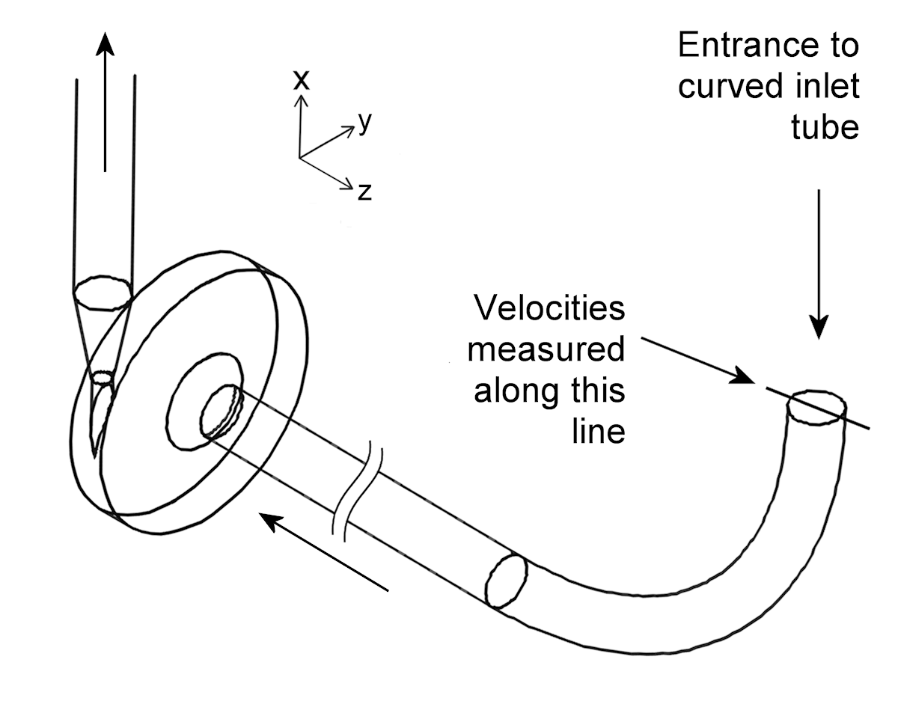

|
|
Pump
Geometry for Interlaboratory Study 2: Blood Pump
Pump Rotor Pump Housing Housing/Rotor Clearances Inlet Outlet
Introduction
- The test object is a
simplified version of a centrifugal blood pump.
- CAD files of the pump
housing chamber and the rotor are available here.
We recommend you use the CAD files.
Let us know if you have problems
loading them.
- All units in this document
conform to the SI (N, kg, m, second) system.
- Use the following coordinate system in interpreting the
drawings that follow:
Back
to Top
Pump Rotor
- The pump rotor has a complex
geometry, in part due to polishing.
- The pump rotor has an outside
diameter of 0.052 m. It has four blades situated at 90° angles.
The rotor blades are each 0.003 m by 0.003 m by 0.0185 m long.
Including the blades, the rotor is 0.007 m thick.
- The rotor shaft diameter is
0.0032 m.
- Below is an image of the CAD
model, and a drawing showing dimensions. Click on a figure to see
it larger.
- After machining, the
experimental acrylic rotors were hand-polished to specifications.
The rotor edges are filleted, with radii as shown below.
Measurements of the rotor fillet radii using microphotography and
metrology compound were made (note: some of the edges were not measured
due to difficulties in visualization, but were estimated).
- The CAD files we supply include these fillets
(but how finely you mesh the fillets is up to you).
|
Key
|
Rotor Edge
|
Measured Fillet Radius
mean ± S.D. (μm)
|
CAD File Nominal
Fillet Radius (m)
|
|
a
|
Disk top edge
|
550 ± 170 (n = 6)
|
0.00055
|
|
b
|
Disk bottom edge
|
510 ± 160 (n = 16)
|
0.00055
|
|
c
|
Blade long edges
|
603 ± 40 (n = 16)
|
0.0006
|
|
d
|
Blade top edge (near rim)
|
170 ± 59 (n = 16)
|
0.00017
|
|
e
|
Blade vertical edges (near rim)
|
Transition
|
0.00017 to 0.00005
|
|
f
|
Blade/disk corner (near rim)
|
Estimated
|
0.00005
|
|
g
|
Disk top edge transition
|
Transition
|
0.00005 to 0.00055
|
|
h
|
Blade top edge (near hub)
|
530 ± 80 (n = 16)
|
0.0006
|
|
i
|
Blade vertical edges (near hub)
|
Estimated
|
0.00017
|
|
j
|
Blade bottom edge (near hub)
|
Estimated
|
0.0006
|
- Below are images
showing the rotor fillets, keyed to the table above. Click on a
figure to see it larger.
- The rim of
the rotor has a slight curve in the z direction, due to polishing:
Back to Top
Pump Housing
- The inner diameter of the pump
housing chamber is 0.06 m. The inner width of the housing chamber
is 0.009 m.
- The drawings below show the
inside surfaces of the pump housing and tubing only. The outer
surfaces of the pump housing and tubing are not shown. The
drawings with dimensions are not to scale. Click on a
figure to see it larger.
- The cutwater is identified
in yellow in the image below, and shown magnified in the circle.
The acrylic model used for experiments has a minimum measured
fillet radius of 0.00004 m (40 μm) along the cutwater. The CAD files we supply include this fillet
(meshing it, however, is up to you). The drawing with dimensions on
the right is not to scale. Click on a figure to see it
larger.
Back to Top
Housing/Rotor Clearances
- The clearances between the
housing and the front and back rotor faces are equal to 0.001 m.
The clearance between the housing and the rotor rim is 0.004 m. The
drawing with dimensions on the right below is not to scale.
Click on a figure to see it larger.
Back to Top
Inlet
- The inlet tube has an inner
diameter of 0.012 m.
- The inlet tube is curved
with a 0.09 m radius to accommodate the flow visualization experiments,
and leads into a straight inlet tube that extends 0.204 m from the end of
the curved tube to the opposite side of
the housing chamber. There is a 0.005 m fillet where the inlet
tube meets the pump chamber. Due to secondary flows in the curved
inlet tube, the entrance velocity profile to the pump may be skewed.
The drawing on the right is not to scale.
- Representative velocity
profiles measured along one diameter at the entrance to the curved tube (see
figure below) are provided here for
reference, in case you want to use similar profiles for your inlet
boundary conditions. The drawing below is not to scale.

- The configuration of any
extension to the inlet is left to your discretion.
Back
to Top
Outlet
- The outlet throat is 0.02 m
long, with a 0.00439 m inner diameter.
- The throat widens via a
0.02154 m long diffuser, to the 0.012 m inner diameter outlet tube.
- The configuration of any
extension to the outlet is left to your discretion.
Back to Top
Back To Interlaboratory Study 2: Blood Pump Information
Page
|